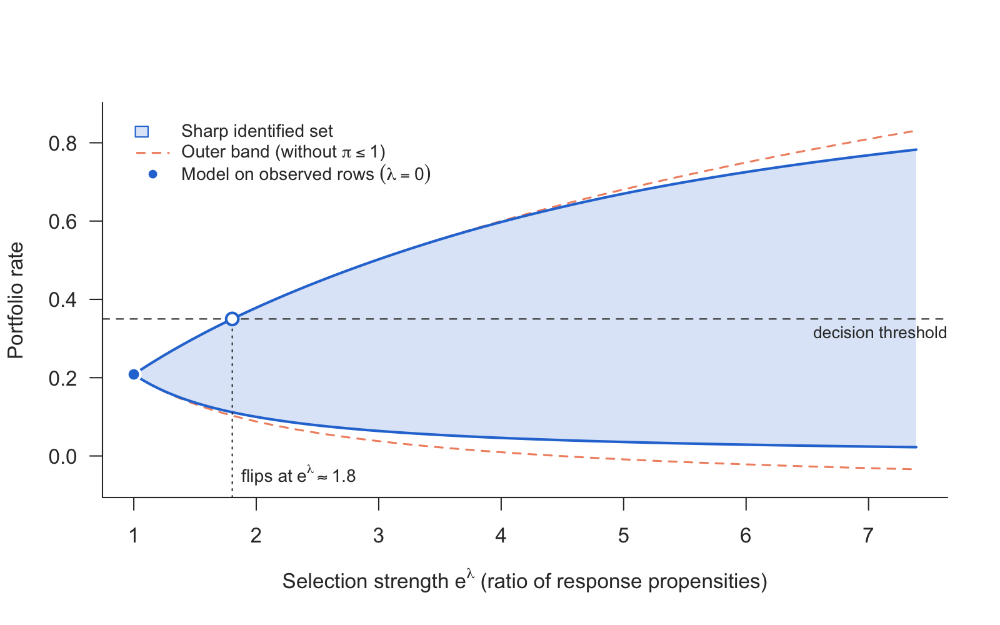
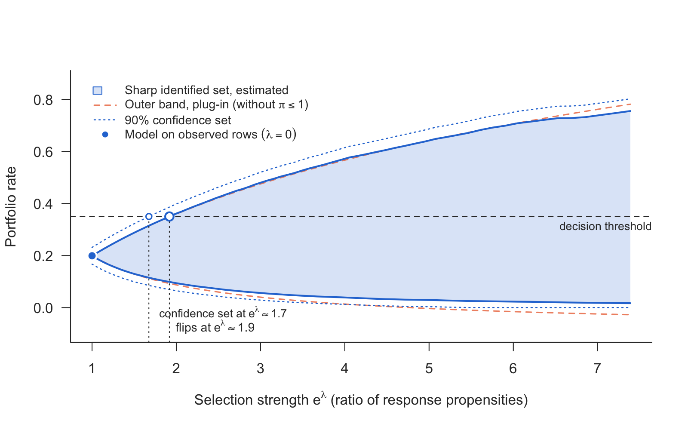
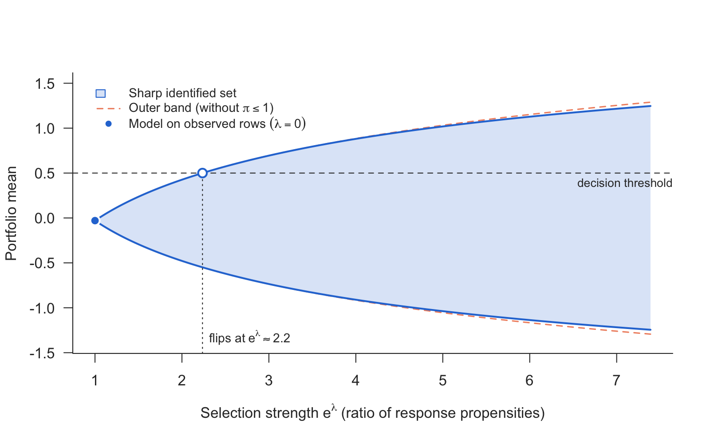
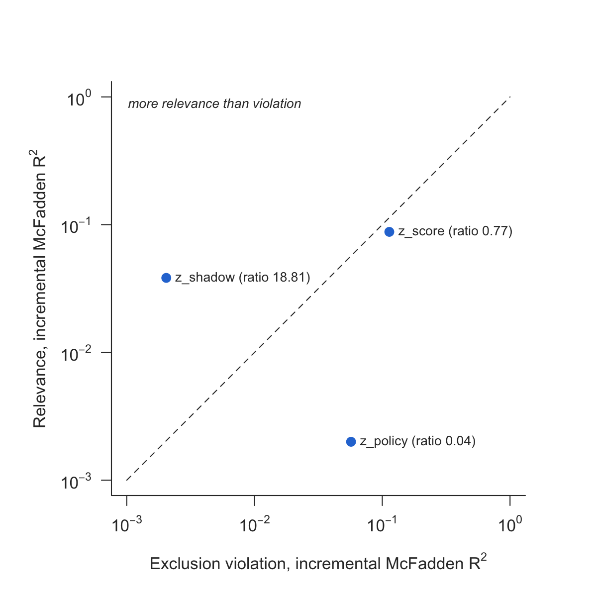

If a binary outcome is missing not at random, as defaults are for rejected credit applications, every model fitted on the observed rows silently asserts one value for how observability depends on the outcome. Nothing in the data selects it. nonignorable provides two tools for two different questions:
-
shadow_screen(): is this variable fit to serve as a shadow variable? It puts relevance for the outcome against violation of the exclusion restriction, both as incremental McFadden R², on one scale. -
sharp_scan()andsharp_scan_mean(): how far can the answer move? They return the sharp identified set under a bound e^λ on the ratio of response propensities between outcome values (a risk ratio, not an odds ratio), with no shadow variable needed. The first handles a binary outcome in closed form, the second the mean of any outcome from a grid of conditional quantiles.
The two rest on different assumptions and are not two halves of one procedure.
The scan
The scan takes two numeric vectors evaluated at the rows of interest: η̂_obs(x) = P(Y = 1 | X = x, R = 1) and the conditional observation rate r̂(x) = P(R = 1 | X = x). Any learner can produce them. The set is
\[\mathcal H_\lambda(x) = \big[\max\{\mathrm{expit}(\ell-\lambda),\, r\eta_{\mathrm{obs}}\},\; \min\{\mathrm{expit}(\ell+\lambda),\, r\eta_{\mathrm{obs}} + 1 - r\}\big],\quad \ell = \mathrm{logit}\,\eta_{\mathrm{obs}},\]
the outer band intersected with the worst-case bounds.
library(nonignorable)
d <- simulate_shadow(5000, tilt = -1, seed = 1)
rej <- d[d$observed == 0, ]
s <- sharp_scan(rej$eta_obs, rej$obs_rate, threshold = 0.35, unobserved = TRUE)
s
plot(s)
The sharp set is never wider than the outer band. Where r̂ is small, as for rejected applications, the two are close; the sharp set is narrower only where a worst-case bound cuts the band. With unobserved = TRUE the set is for the rejected rows’ own default rate, E(Y | R = 0), rather than for the average of η(x) at their characteristics; under selection on the outcome the two differ. The default aggregation averages each row’s own bounds, which is sharp under the pointwise assumption. aggregate = "common" adds the assumption of one tilt for all rows. That set is narrower but is bounded by the most extreme rows, so with estimated inputs it inherits their estimation error. The help page explains how to read it.
Sampling error
sharp_scan() treats its inputs as known. sharp_scan_ci() adds a confidence set for the binary scan, after Semenova (2025): the binding piece of each row is chosen from models fitted without it, and an orthogonal signal of that piece is averaged instead of its plug-in value, which is biased towards the inside of the set. It needs cross-fitted inputs for all rows and the observed outcomes; crossfit_inputs() produces them for any learner you pass as a function.
f <- ~ x1 + x2 + z_shadow + z_policy + z_score
inp <- crossfit_inputs(d, "observed",
fit_eta = function(train, new) predict(glm(update(f, y ~ .), binomial, train),
new, type = "response"),
fit_r = function(train, new) predict(glm(update(f, observed ~ .), binomial, train),
new, type = "response"),
seed = 1)
ci <- sharp_scan_ci(inp$eta_obs, inp$r, d$observed, d$y, target = "unobserved",
threshold = 0.35)
plot(ci)
The confidence set covers the identified set, pointwise in λ. sharp_scan_mean_ci() does the same for the mean of a non-binary outcome, with quantile grids cross-fitted by crossfit_quantiles().
To compare two portfolios chosen by X, such as the arms of a trial, sharp_scan_contrast() gives the sharp set for the difference of their rates with a confidence set. It also reports the selection strength from which “no difference” can no longer be ruled out. sharp_scan_mean_contrast() does the same for the difference of two means.
k <- sharp_scan_contrast(inp$eta_obs, inp$r, d$observed, d$y,
target_a = d$x1 > 0, target_b = d$x1 <= 0)The scan for a mean
For an outcome that is not binary, sharp_scan_mean() takes, per row, a grid of conditional quantiles of Y given R = 1 and X, together with r̂(x). It returns the sharp set for the mean under the same assumption. Binary input reproduces sharp_scan() exactly.
dc <- simulate_shadow(3000, tilt = -1, outcome = "continuous", seed = 1)
q <- obs_quantiles(dc, K = 200) # n x K, levels (k - 1/2)/K
rej <- dc$observed == 0
sm <- sharp_scan_mean(q[rej, ], dc$obs_rate[rej], threshold = 0.5, unobserved = TRUE)
plot(sm)
obs_quantiles() knows the simulator’s truth. On real data, quantile_grid() builds the grid from a fitted model. It accepts a quantreg::rq fit (refitted at the K levels), any function(tau, newdata), or a matrix of draws from a distributional model. It sorts crossing quantile curves and reports how far that moved them.
obs <- dc[dc$observed == 1, ]
fq <- quantreg::rq(y ~ x1 + x2 + z_shadow + z_policy + z_score, data = obs)
q <- quantile_grid(fq, dc[rej, ], K = 200)The distribution function and quantiles
sharp_scan_cdf() scans P(Y ≤ t), or P(Y ≤ t | R = 0), at each value of a grid, as the rate of the binary outcome 1(Y ≤ t), with a debiased estimate and a confidence set at each t. quantile() turns the bounds into bounds for quantiles. The sets hold for each t separately, not as a band. crossfit_cdf() fits P(Y ≤ t | R = 1, X) as one classification per t.
tg <- seq(-2, 2, by = 0.25)
cf <- crossfit_cdf(dc, "observed", "y", tg,
fit_eta = function(train, new) predict(glm(update(f, z ~ .), binomial, train),
new, type = "response"),
fit_r = function(train, new) predict(glm(update(f, observed ~ .), binomial, train),
new, type = "response"),
seed = 1)
kc <- sharp_scan_cdf(cf$eta_t, cf$r, dc$observed, dc$y, t = tg, lambda = 0.5)
quantile(kc, c(0.25, 0.5, 0.75))The screen
The scan needs no shadow variable; with one, the selection on the outcome can be estimated instead of bounded. A shadow variable predicts the outcome (relevance) but has no effect of its own on whether the outcome is observed (exclusion). Exclusion cannot be checked directly, because it conditions on the missing outcome. The screen measures what the data can show: whether a candidate is relevant, and whether it predicts selection more strongly than the outcome, the mark of a variable the selection uses directly. For each candidate it compares the gain in McFadden R² from adding it to the outcome model (observed rows) and to the response model (all rows), and passes candidates with clear relevance and more relevance than violation.
sc <- shadow_screen(d, outcome = "y", response = "observed",
covariates = c("x1", "x2"),
candidates = c("z_shadow", "z_policy", "z_score"))
sc
plot(sc)
Numeric characteristics enter linearly by default. If the selection uses one through a threshold, as a lender declining every score below a cut-off, a linear term cannot represent the step and understates the exclusion violation. The screen warns when it sees the trace of such a rule: values on more than 1% of the sample that never occur among the observed rows. numeric = "classes" then codes every numeric characteristic as about ten classes of equal mass, plus a class for values outside the observed range:
shadow_screen(d, "y", "observed", c("x1", "x2"), "z_score", numeric = "classes")The classes come from screen_classes(), which cuts only between distinct values. Quantile classes from cut() put boundaries on heaped values, such as loan amounts on round numbers, and then assign those rows by convention; attr(screen_classes(x), "heaping") reports how many. Call it yourself for known cut-offs or other class counts and pass factors.
Vignettes
-
vignette("nonignorable"): the tools on simulated data with a known truth, and how to read their output. -
vignette("applications"): reject inference on Lending Club 2014 and dropout in the ACTG 175 trial, side by side, including a comparison of treatment arms withsharp_scan_contrast().
Scope
The scan covers a binary outcome in closed form, the mean of any outcome with a finite mean, and the distribution function and quantiles, pointwise in t. It offers no bands uniform in t. The screen takes a binary outcome directly, a numeric one through an ordinal model on classes and a categorical one through an ordinal or multinomial model; it measures relevance and does not certify identification. Covariates, learners and sample size are unrestricted. The package fits neither η_obs nor r: sharp_scan() and sharp_scan_mean() treat them as known, and the _ci functions take cross-fitted predictions from your own learner. It ships no outside data: examples and tests run on simulate_shadow().